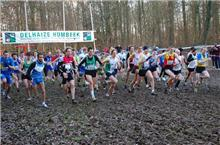
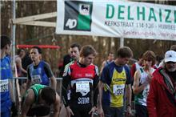

Zondag 9 januari 2011 stond in Grimbergen de jaarlijkse veldloop op het programma. 2 SMO-ers stonden aan de start van de lange cross (9360m) voor een attractief parcours in het Prinsenbos. Simon De Cuyper werd knap 5e (in 31'02") en nieuwkomer Nick Debusschere eindigde als 39e. De
atletiekclub Grimbergen was reeds aan zijn 39ste editie toe. Het verslag van Simon kan je hieronder lezen.
Naar jaarlijkse gewoonte probeer ik in de winter enkele crossen of stratenlopen mee te pikken, en nadat de leuvense kerstcorrida geannuleerd werd door de hevige sneeuwval moest ik op zoek naar een alternatief. Dat alternatief vond ik met de cross van Grimbergen, deze veldloop lokte dankzij zijn geldprijzen toch enkele goede lopers naar het prinsenbos dus het zou een goede test worden.
Het mooie parcours bevatte zowel modderstroken als beter beloopbare stukken, met tussendoor ook redelijk veel vals plat.

Na een snelle start bevond ik me gedurende de eerste van de zes af te leggen rondes vooraan, in het spoor van de uitgesproken favorieten Stijn Garain en Mats Lunders. Maar ik voelde direct dat het tempo erg hoog lag, te hoog voor 9km! Ik dacht dat de mannen wel wat gingen temporiseren in de tweede ronde... Dit gebeurde echter niet en in de tweede ronde moest ik dan ook passen. Ik had echter wel al redelijk hard op mijn adem getrapt, en moest dat in de volgende rondes wat bekopen. Enkele tegenstanders liepen voorbij en aanpikken lukte niet, de kilometers leken op dat moment erg lang te duren.
Gelukkig hervond ik in de voorlaatste ronde mijn tweede adem een beetje en met het ingaan van de laatste ronde voelde ik me eigenlijk terug erg goed. Ik versnelde, kon enkele concurrenten terug oprapen en schudde in de strijd voor de 5de plaats "Bouba" van me af.. dacht ik. Want met nog 200meter te gaan zag ik hem plots terug opduiken achter mij en zo zou er nog gesprint worden. Ik haalde het nipt in de sprint, en was blijkbaar nog redelijk dicht bij de 2 man voor mij gefinisht. Misschien dat er met een betere dosering iets meer had kunnen inzitten, de eerste twee waren echter duidelijk een maat te sterk en eindigden met een minuut voorsprong.
Voor mij is het momenteel uitkijken naar de februari maand, waarin ik samen met smo-ploegmaten Willem en Tom op stage trek met de federatie in Monte Gordo. Een Portugees zonnetje zal ons deugd doen en dan zal ik in maart wel nog eens veldloop meepikken.